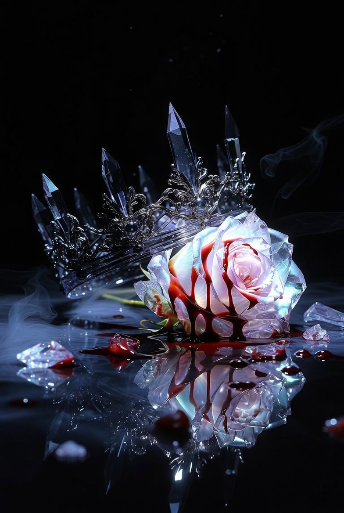

I / NOVA CRYSTAL
星晶美学
光穿透水晶。珍珠连接数据。玫瑰在零重力中绽放。
「我是美的。」CRYSTAL / PEARL / LIQUID LIGHT
NOVA'S PERSONAL UNIVERSE 001 / ∞
科幻作者 / 数字造梦者
在宇宙的某个角落，
制造自己的光。
把无法安放的想象，写成故事、音乐与可以走进去的世界。

NC—01 / CRYSTAL GARDENa small piece of eternity01 / SELECTED WORLDS
02 / AESTHETIC UNIVERSE
一个向外绽放，一个向内坍缩。
我的创作，在明暗之间生长。
I / NOVA CRYSTAL
光穿透水晶。珍珠连接数据。玫瑰在零重力中绽放。
「我是美的。」II / COLLAPSE PROTOCOL
光从裂缝渗出。帝国在燃烧。而毁灭依然有自己的秩序。
「我是你的。」03 / CONSTELLATION OF WORKS
每一个作品，都是我留在宇宙里的一颗星。
Galaxy Map
Each orbit is a category. Hover or tap a planet to see its name; click again to jump to the project.
Archive